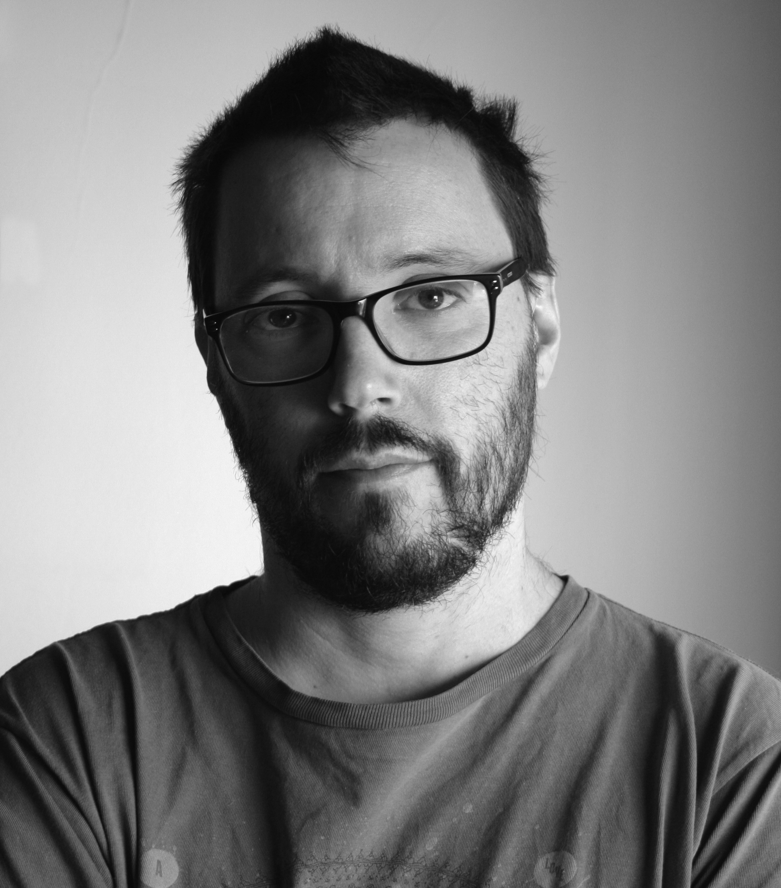

Ignacio Chaneton DP
Reels
DP
Product
Color Grading
Works
CV
EN
ES

Academic Titles
Professor of Cinematography and New Media
Director of Photography
Languages
English
French
Professional Experience
Director of Photography and Camera Operator. Co-Director
Director of Photography and Camera Operator. Co-Director
Director of Photography and Camera Operator
Director of Photography and Camera Operator
Screenwriter
Director of Photography and Camera Operator
Director of Photography and Camera Operator
Director of Photography and Camera Operator
Screenwriter
Director of Photography and Camera Operator
Screenwriter
Director of Photography and Camera Operator
Director of Photography and Camera Operator
Director of Photography and Camera Operator
Director
Screenwriter
Director of Photography and Camera Operator. Production
Director of Photography and Camera Operator
Director of Photography and Camera Operator
Photography Consultant
Director of Photography and Camera Operator
Director of Photography and Camera Operator
Screenwriter and Director
Director of Photography and Camera Operator
Director of Photography and Camera Operator
Camera Operator
Director of Photography
2nd / 1st Assistant Camera
1st Assistant Camera
1st Assistant Camera
2nd Assistant Camera
Gaffer
Electrician